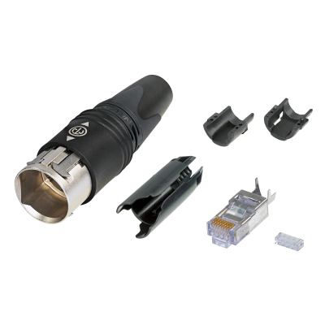

どの端子へつなぐ？
両端の機器名と端子型式を共有。通常RJ45や別世代のetherCONへ、そのまま使えるとは考えません。
映像をつなぐ・整える ↗EQUIPMENT / 62
CAT6ケーブル側コネクタ部品
同じetherCONでも、端子の世代をそろえる。
KEY SPECIFICATIONS

画像を大きく見る ＋01 / ROLE & FLOW
02 / BEFORE YOUR BRIEF
両端の機器名と端子型式を共有。通常RJ45や別世代のetherCONへ、そのまま使えるとは考えません。
種類・外径・線径・長さと必要な通信性能を確認。完成ケーブルが必要か、部品が必要かも分けます。
屋内外、雨水・粉じん、配線経路と抜き差し頻度を共有。組立・検査・現場管理の担当を決めます。
03 / CHOOSING THE RIGHT TOOL
NE8FDY-C6系端子を備えた機器へつなぐケーブル用の部品です。完成ケーブルの手配では、両端の形状とケーブル長を先に確認します。
LANケーブルの端に取り付けて使う、etherCONのケーブル側コネクターです。メーカー指定の嵌合相手はNE8FDY-C6系のみで、CAT5およびCAT6AのetherCONシャーシ端子とは非互換です。IP65は、正しく組み立てて適合端子とつないだ状態での等級です。
金属製キャリア、プッシュプルロック、ケーブルの引張保護とCAT6 RJ45プラグを含む組立用セットです。メーカー指定は外径5.5〜6.5 mm、AWG 22〜28の単線または撚線のSTP／UTPケーブルです。CAT6としての性能はコネクタだけでは決まらず、ケーブル・相手端子・施工品質・長さを含めて確認します。加工・結線・試験は専門担当がメーカー資料に照らして判断します。部品単体の手配・レンタル可否、完成ケーブル化や施工の対応範囲、付属品、料金は案件ごとに確認します。
接続する両端の機器・端子型式、必要な通信性能、ケーブル種類・外径・線径・長さ、部品か完成ケーブルか、使用環境、組立・検査・施工範囲をお聞かせください。本体・周辺機材・搬入出・設営・本番操作・撤去を分けて、必要な範囲を整理します。